# Librerías necesarias
library(TSstudio)
library(readxl)
library(dplyr)
library(lubridate)
library(astsa)
library(feasts)
library(fable)
library(timetk)
library(tsibble)
library(zoo)
library(xts)
library(readxl)
library(tidyverse)
library(nonlinearTseries)
library(tseriesChaos)
library(forecast)
library(plotly)
library(dplyr)
library(parsnip)
library(rsample)
library(timetk)
library(modeltime)
library(tsibble)
library(tidymodels)
library(greybox)
library(TSA)
library(urca)
library(lmtest)
library(uroot)
library(fUnitRoots)
library(sarima)
library(TSA)
require("PolynomF")
require("forecast")3 Ajuste de modelos para serie de Energía
Como vimos en la sección anterior. Para la serie de energía no fue necesario estabilizar la varianza, sin embargo, esta presenta tanto tendencia como multiple estacionalidad (\(7\) y \(365.25\))
Una vez realizado el análisis descriptivo de la serie de energía, se da inicio al modelamiento de la misma. Este se hará por medio de 3 modelos:
- Suavizamiento exponencial
- Modelo ARMA con series de Fourier
Estos modelos serán contrastados con base en su capacidad predictiva para seleccionar el mejor y realizar prediciones con él acerca del consumo diario de energia de la empresa PJM para fechas poseriores al año 2018.
3.1 Suavizamiento Exponencial
3.1.0.0.1 Carga de la base de datos
# Carga de la base de datos
AEP_hourly<-read.csv("AEP_hourly.csv")
AEP_hourly$Datetime<-as.POSIXct(AEP_hourly$Datetime, format = "%Y-%m-%d %H:%M:%S")
AEP_hourly$fecha<-as.Date(AEP_hourly$Datetime)
energia <- AEP_hourly %>%
group_by(fecha) %>%
summarise(Energia = sum(AEP_MW))
energia<-energia[-5055,]
energia2<-ts(energia$Energia,start=c(2004,10,01),frequency=365.25)# Creación del objeto msts indicando las dos estacionalidades
ly <- msts(energia$Energia,start=c(2004,10,01), seasonal.periods=c(7,365.25))
#HW_ly=stats::HoltWinters(ly,seasonal="additive") # parece que sí funciona
# Predicciones
#forecast::forecast(HW_ly,h=7,level =0.95)
#plot(forecast::forecast(HW_ly,h=7,level =0.95))3.1.0.1 Separación datos de entrenamiento y prueba
Se hizo una división de los datos originales, el \(85\%\) para datos de entrenamiento y el \(15\%\) restante para datoos de prueba.
# Separar train y test
h=1 # Haremos predicciones 1-paso hacia delante
# Datos entrenamiento
ntrain=trunc(length(ly)*0.85) # 4295 datos
train=window(ly,end=time(ly)[ntrain])
# Datos prueba
test=window(ly,start=time(ly)[ntrain]+1/365.25)
ntest=length(test) # 729 datos
# fchstepahe: Vector para guardar las predicciones h-pasos adelante
fchstepahe=matrix(0,nrow=ntest,ncol=h)
# verval: Vector con los verdaderos valores de la serie en el conjunto de prueba con los que se compararán los pronósticos
verval=test[1:ntest]3.1.0.2 Ajuste del modelo
En el modelo por medio de suavizamiento exponencial también se considera una descomposición de la serie de forma aditiva. Las componentes de tenendecia y la estacionalidad se estiman por medio de una estadística EWMA (promedio movil ponderado exponencialmente), dándole más peso a las observaciones más cercanas en cada tiempo.
Además, para este caso, se descompone la componente de tendencia en nivel y pendiente, y se estima un parámetro de la componente estacional. Las estimaciones se hallan de la siguiente manera:
\[\begin{align*} \text{Componente de nivel: } & a_t=α(x_t-S_{t-p})+(1−α)(a_{t−1}+b_{t−1})\\ \text{Componente de pendiente: } & b_t=β(a_t−a_{t−1})+(1−β)b_{t−1} \\ \text{Componente estacional: } & S_t=\gamma(x_t−a_t)+(1−γ)S_{t−p} \\ \end{align*}\]
Para encontrar los parámetros de suavizamiento \(\alpha\), \(\beta\) y \(\gamma\) usamos una grilla con valores desde \(0.001\) hasta \(0.999\) de a \(0.1\) para cada parámetro.
require(utils)
# Propuestas para cada parámetro
suav_inputs=cbind(seq(0.001,0.999,0.1),seq(0.001,0.999,0.1),seq(0.001,0.999,0.1))
colnames(suav_inputs)<-c("alpha","beta","gamma")
suav_inputs_tbl=tibble::as_tibble(suav_inputs)
# Creación de la grilla
grilla_suav=expand.grid(alpha=suav_inputs_tbl$alpha,beta=suav_inputs_tbl$beta,gamma=suav_inputs_tbl$gamma)
# Matriz para almacenar los errores
errores<-matrix(NA, nrow=1000,ncol=3)
# Búsqueda de alpha, beta y gamma con rolling, queremos que minimice ECM
for(i in 1:1000){
ourCallETS <- "forecast::forecast(stats::HoltWinters(x=data,alpha=grilla_suav[i,1],beta=grilla_suav[i,2],gamma=grilla_suav[i,3]),h=h,level=95)"
ourValueETS <- c("mean","lower","upper")
origins=ntest # Número de rolling windows
Valoresretornados1 <- ro(ly, h=h, origins=origins, call=ourCallETS, value=ourValueETS,ci=FALSE,co=FALSE)
t(Valoresretornados1$holdout) # Permiten verificar los verdaderos valores h-pasos adelante.
t(Valoresretornados1$mean)
errores[i,]<-sqrt(apply((Valoresretornados1$holdout -Valoresretornados1$mean)^2,1,mean,na.rm=TRUE)) # Se calcula la raíz del error cuadrático medio de predicción
}
# Error medio absoluto escalado
errores<-na.omit(errores)
min(errores[,1]) # RECM= 47201.82
which(errores[,1] == min(errores[,1])) # 885
grilla_suav[885,] # alpha=0.701, beta=0.701, gamma=0.501[1] 47201.82De modo que el modelo final para suavizamiento exponencial es
\[\begin{align*} \text{Componente de nivel: } & a_t=0.701(x_t-S_{t-p})+(1−0.701)(a_{t−1}+b_{t−1})\\ \text{Componente de pendiente: } & b_t=0.701(a_t−a_{t−1})+(1−0.701)b_{t−1} \\ \text{Componente estacional: } & S_t=0.7501(x_t−a_t)+(1−0.501)S_{t−p} \\ \end{align*}\]
3.1.0.3 Evaluar los supuestos
Aunque en suavizamiento exponencial no se hacen supuestos sobre los residuales, aún así hicimos las pruebas para ver si los residuales tenían un comportamiento similar a ruido blanco.
# Verificación de supuestos
HW_train_grilla=stats::HoltWinters(train,seasonal="additive",alpha=0.701,beta=0.701,gamma=0.501) # con los parámetros que dieron mejor en la grilla
# Residuales
res <- ly-HW_train_grilla$fitted[,1]
plot(res)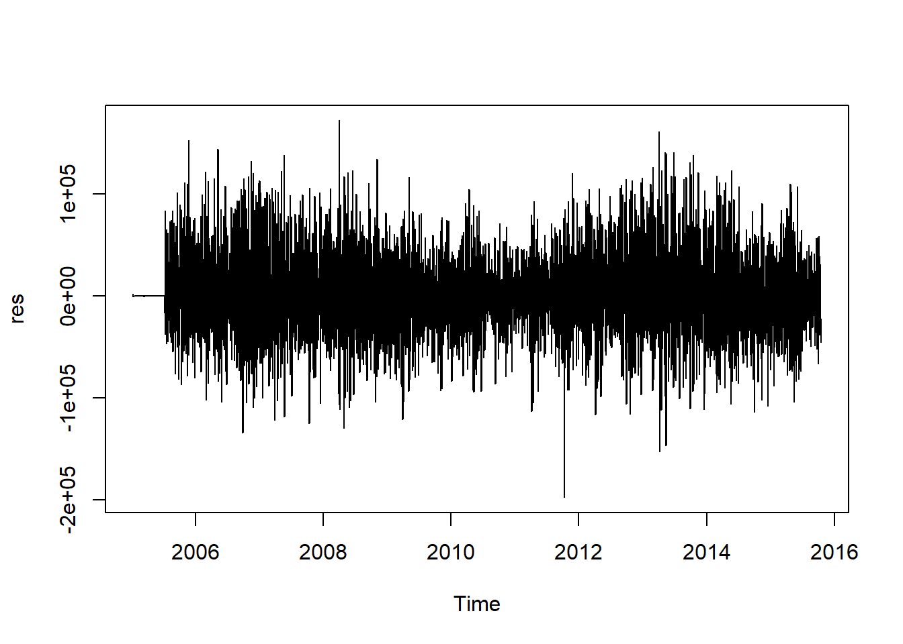
3.1.0.3.0.1 No autocorrelación
Luego de ser modelados con el suavizamiento exponencial, parece que aún queda correlación por explicar
# ACF
acf(as.numeric(res)) # No deberían estar fuera de las bandas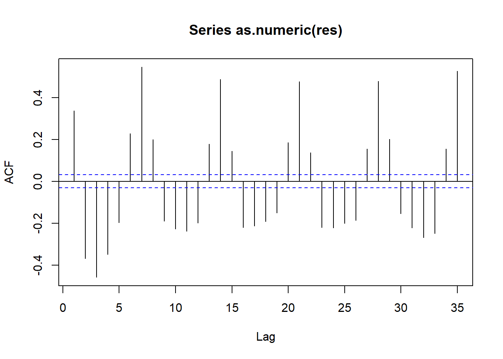
#acf(res^2)3.1.0.3.0.2 No autocorrelación parcial
# PACF
pacf(as.numeric(res)) # No deberían estar fuera de las bandas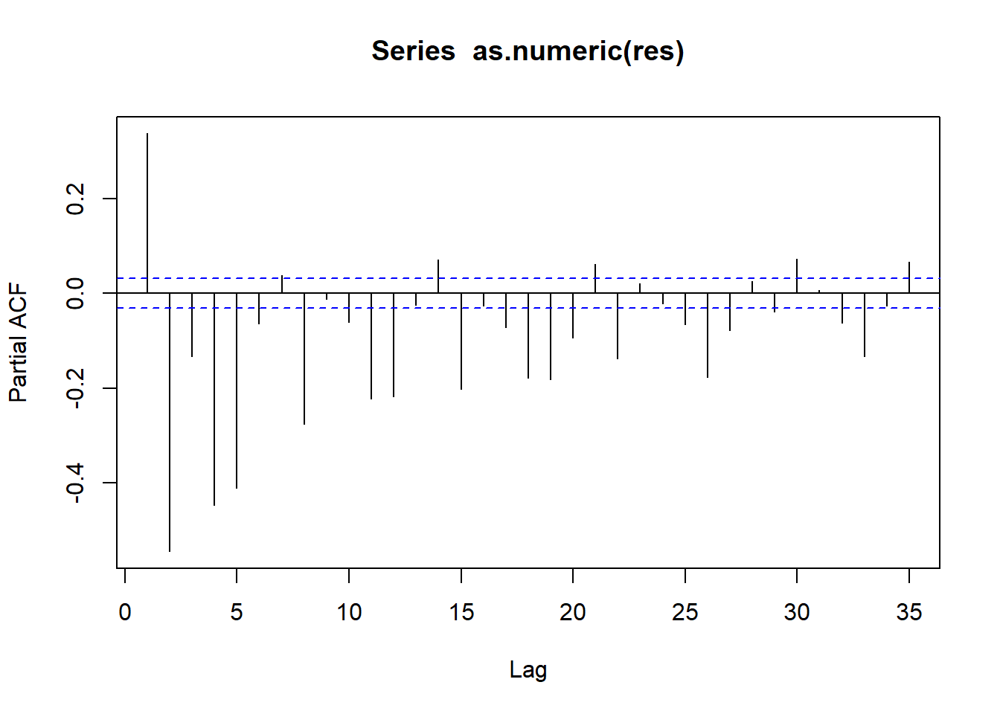
3.1.0.3.0.3 Test de normalidad
Parece que no hay normalidad en los residuales
# Test de normalidad
## NO queremos rechazar H0 pero pues no es tan grave
tseries::jarque.bera.test(res) # Dice que no son normales
Jarque Bera Test
data: res
X-squared = 49.017, df = 2, p-value = 2.27e-113.1.0.3.0.4 Test de autocorrelación
Luego de ser modelados con el suavizamiento exponencial, parece que los residuales están correlacionados
# Test de autocorrelacion
## No quieremos rechazar H0
Box.test(res, lag =20 , type = "Ljung-Box", fitdf = 2) # No puedo Rechazar la hipótesis de no autocorrelación!
Box-Ljung test
data: res
X-squared = 6590.4, df = 18, p-value < 2.2e-163.1.0.3.0.5 Estabilización de la varianza
CREO QUE ESTO ES MEJOR NO PONERLO PQ NO SÉ SI SIRVA PARA SUAVIZAMIENTO
# Estadisticas CUSUM
## Mide la estabilidad en los parámetros del modelo
cum=cumsum(res)/sd(res)
N=length(res)
cumq=cumsum(res^2)/sum(res^2)
Af=0.948 ###Cuantil del 95% para la estad?stica cusum
co=0.01717####Valor del cuantil aproximado para cusumsq para n/2
LS=Af*sqrt(N)+2*Af*c(1:length(res))/sqrt(N)
LI=-LS
LQS=co+(1:length(res))/N
LQI=-co+(1:length(res))/N
plot(cum,type="l",ylim=c(min(LI),max(LS)),xlab="t",ylab="",main="CUSUM")
lines(LS,type="S",col="red")
lines(LI,type="S",col="red")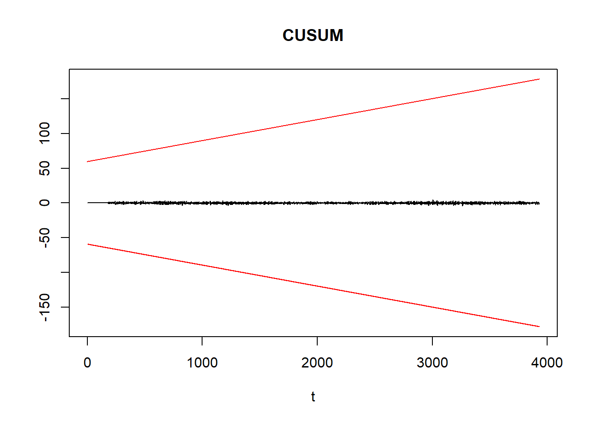
# Estadísticas CUSUMSQ
## Mide la estabilidad en la varianza del modelo
plot(cumq,type="l",xlab="t",ylab="",main="CUSUMSQ")
lines(LQS,type="S",col="red")
lines(LQI,type="S",col="red")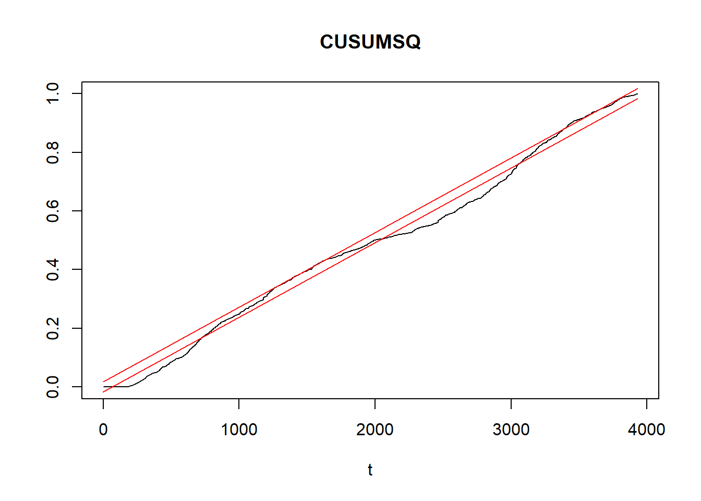
3.1.0.4 Predicciones sobre datos de prueba
verval_ts<-ts(verval,start=time(ly)[ntrain]+1/365.25,frequency=365.25)
fchstepahe_ts<-ts(fchstepahe,start=time(ly)[ntrain]+1/365.25,frequency=365.25)
plot(verval_ts, col = "blue", ylab = "Energía", xlab = "Tiempo")
lines(fchstepahe_ts, col = "red")
legend("topright", legend = c("Reales", "Predicciones"), col = c("blue", "red"), lty = 1)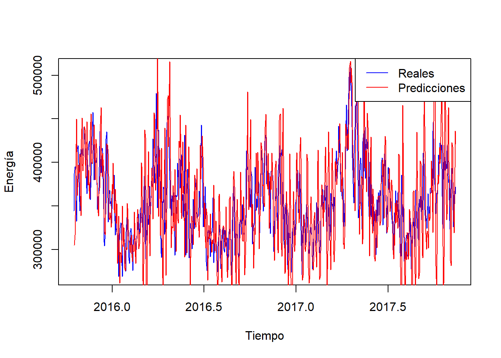
3.2 Proceso ARMA
3.2.0.1 Carga de la base de datos
Para ajustar un modelo de la familia ARMA(p,q) es necesario que los datos sean estacionarios, por lo tanto, usamos los datos que resultan luego de eliminar la tendencia línealmente y eliminar la doble estacionalidad que fue modelada usando 6 componentes de Fourier (3 para \(s=7\) y 3 para \(s=182\))
# Datos estacionales
y<-readRDS("energia_estacionarios.RDS") # datos estacionarios
plot(y)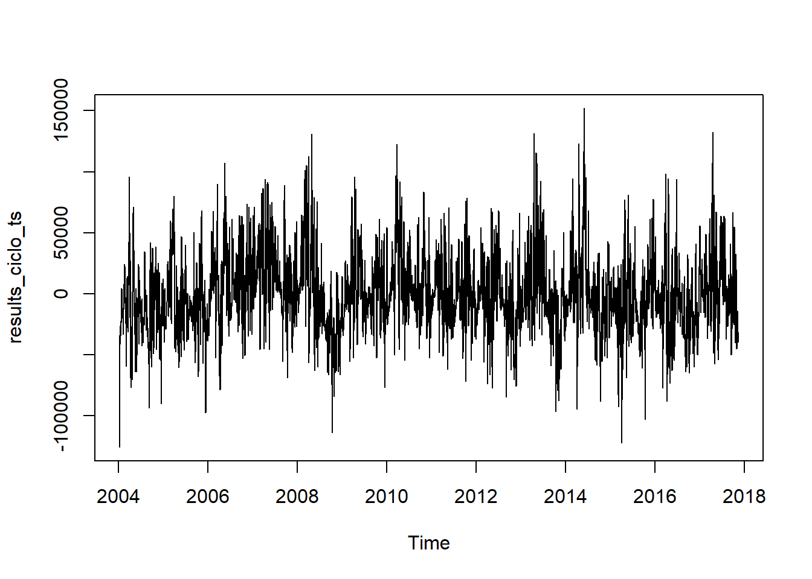
plot(y,xlim=c(2004,2006))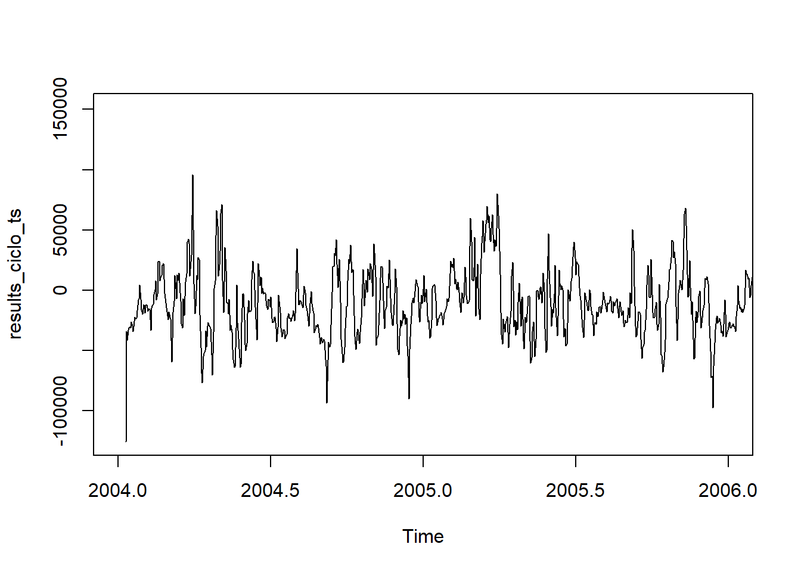
Comprobamos que son estacionarios observando la subserie semanal y la subserie mensual
# Preliminares
est_1<-cbind(as.matrix(y),as.character(energia$fecha))
est_1<-as.data.frame(est_1)
names(est_1)<-c("Energia","fecha")
est_1$Energia<-as.numeric(est_1$Energia)
est_1$fecha<-as.Date(est_1$fecha)
df_est=data.frame(Energia=est_1$Energia,fecha=est_1$fecha)
tbl_est=tibble(df_est)
tbl_est_format_fecha=tbl_est
tsbl_est=as_tsibble(tbl_est_format_fecha,index=fecha)
# Subserie semanal
gg_subseries(tsbl_est,y=Energia,period=7)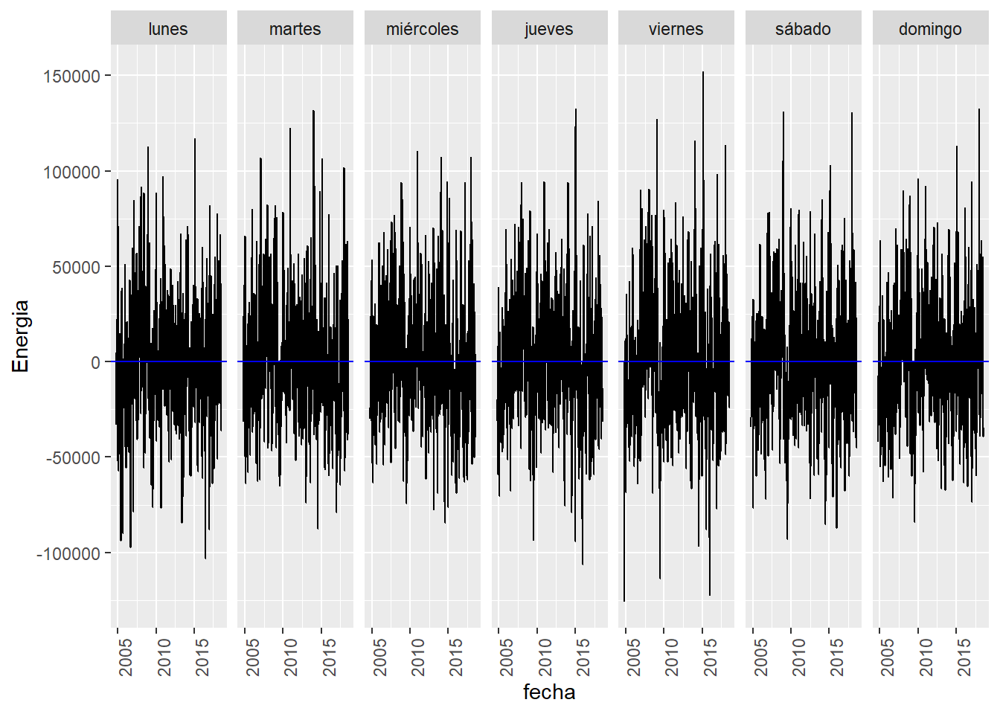
# Subserie mensual
gg_subseries(tsbl_est,y=Energia,period=12)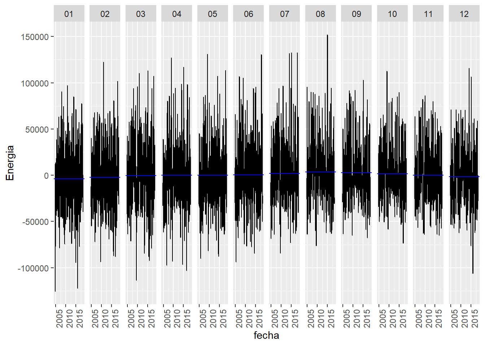
3.2.0.2 Búsqueda de los hiperparámetros p y q
La búsqueda de los hiperparámetros p y q se hace vía ACF y PACF
# Búsqueda de p,q vía acf y pacf
# Búsqueda de q
acf(as.numeric(y)) # Parece que q es gigante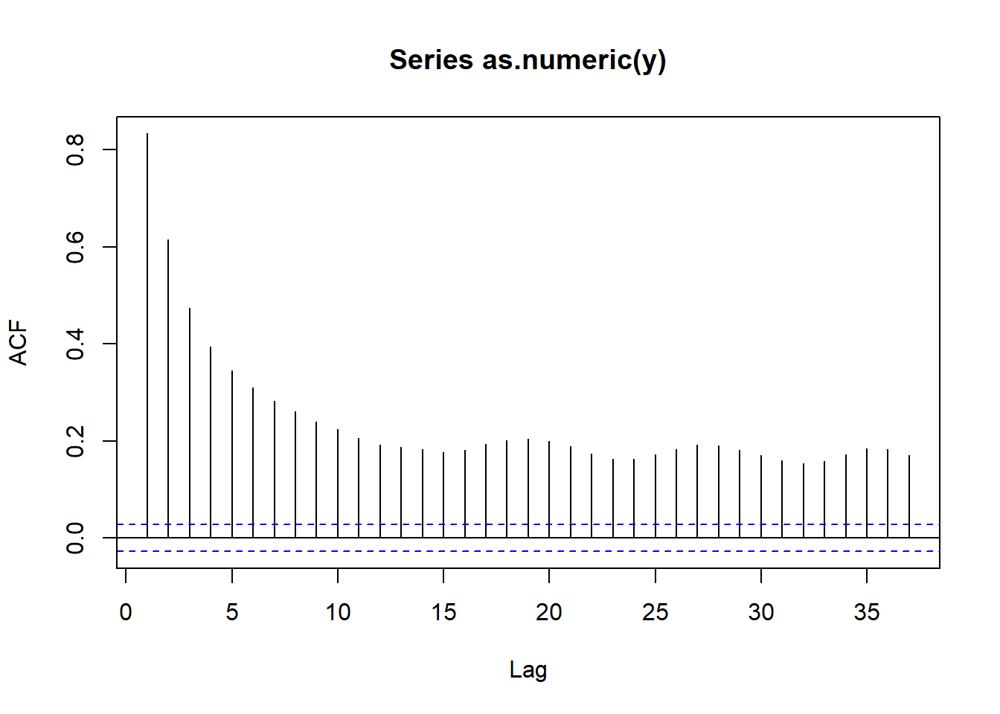
#acf(as.numeric(y),ci.type='ma') # En efecto, q es grande
# Búsqueda de p
pacf(as.numeric(y)) # p máximo 3, posiblemente 5 o 6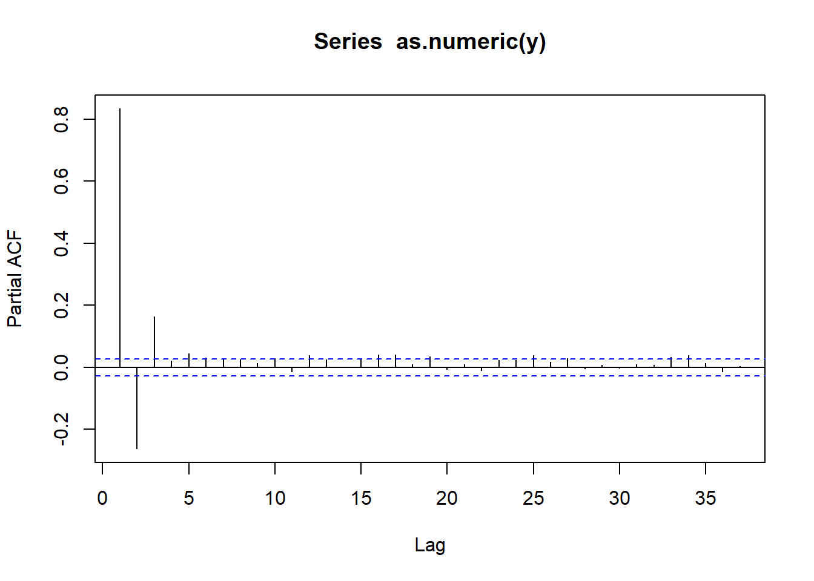
Luego de observar los gráficos, vemos que es posible que \(p=6\) o menos, y \(q\) debe ser grandísimo, por razones prácticas postulamos inicialmente \(q=20\), es razonable postular un modelo AR(6) y refinarlo, así como también un modelo mixto ARMA(6,20) y refinarlo. No es nada razonable pensar en un \(MA(q)\) puro por lo que vemos que el ACF decae excesivamente lento.
3.2.0.3 Ajuste del modelo ARMA
Inicialmente se ajustó un modelo AR(6) y se refinó, sin embargo no se encontró un modelo autoregresivo puro que cumpliera los supuestos. Luego de una ardua búsqueda, finalmente encontramos un modelo mixto que cumpliera los supuestos, este es ARMA(5,8) que también fue refinado, de modo que el modelo final es:
\[X_t=\phi_1 X_{t-1}+\phi_2 X_{t-2}+\phi_3 X_{t-3}+Z_t+\theta_1 Z_{t-1}+\theta_2 Z_{t-2}+\theta_3 Z_{t-3}+\theta_4 Z_{t-4}+\theta_6 Z_{t-6}\]
# Propuesta modelo ARMA
modelo.propuesto2=forecast::Arima(y,order=c(5,0,8),fixed=c(NA,NA,0,NA,0,NA,NA,NA,NA,0,NA,0,0,0)) # ARMA(5,8)
lmtest::coeftest(modelo.propuesto2)
z test of coefficients:
Estimate Std. Error z value Pr(>|z|)
ar1 0.278287 0.116425 2.3903 0.01684 *
ar2 1.017041 0.143894 7.0680 1.572e-12 ***
ar4 -0.312920 0.034978 -8.9463 < 2.2e-16 ***
ma1 0.819146 0.116858 7.0098 2.387e-12 ***
ma2 -0.567652 0.028526 -19.8992 < 2.2e-16 ***
ma3 -0.828137 0.071508 -11.5811 < 2.2e-16 ***
ma4 -0.244673 0.027497 -8.8982 < 2.2e-16 ***
ma6 0.026696 0.011651 2.2913 0.02194 *
---
Signif. codes: 0 '***' 0.001 '**' 0.01 '*' 0.05 '.' 0.1 ' ' 13.2.0.4 Evaluar los supuestos
Para los modelos de la familia ARMA sí se hacen supuestos sobre los residuales que deben comportarse como ruido blanco. Por lo tanto, es necesario validar los supuestos
# Verificación de supuestos ARMA
res <- modelo.propuesto2$residuals
plot(res)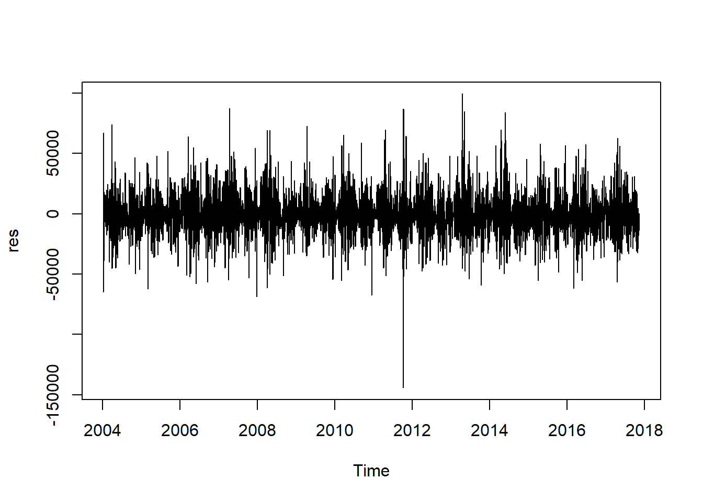
3.2.0.4.0.1 No autocorrelación
En general, los residuales presentan un buen comportamiento. No qued nada por explicar que no haya explicado ya el modelo.
# ACF
acf(as.numeric(res)) # No deberían estar fuera de las bandas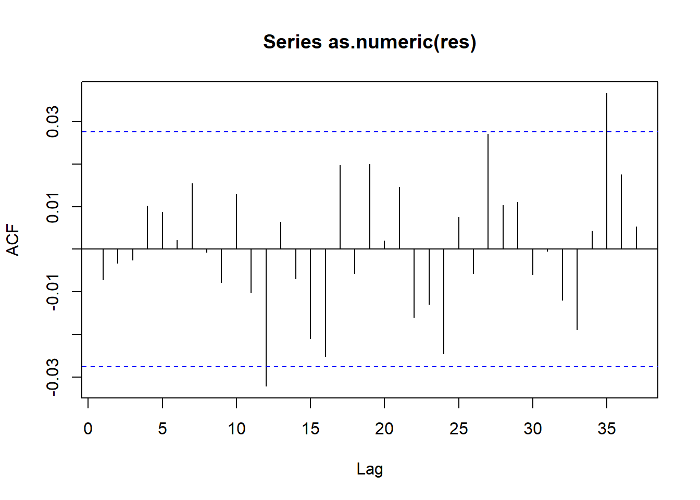
# acf(as.numeric(res^2))3.2.0.4.0.2 No autocorrelación parcial
En general, los residuales presentan un buen comportamiento. No qued nada por explicar que no haya explicado ya el modelo.
# PACF
pacf(as.numeric(res)) # No deberían estar fuera de las bandas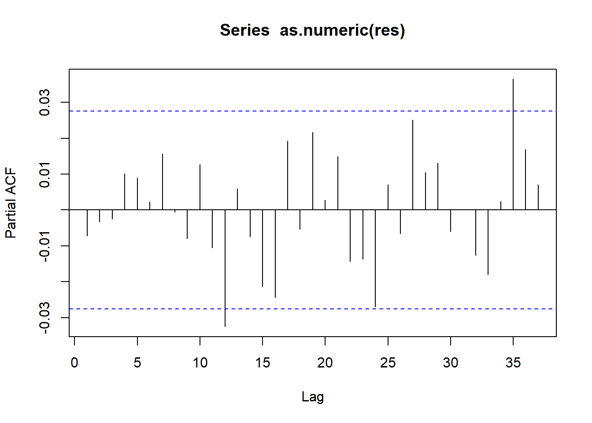
3.2.0.4.1 Test de normalidad
Parece ser que los datos NO son normales.
#Test de normalidad
## No queremos rechazar H0 pero pues no es tan grave
tseries::jarque.bera.test(res)
Jarque Bera Test
data: res
X-squared = 2096.9, df = 2, p-value < 2.2e-163.2.0.4.2 Test de autocorrelación
Con un \(p-value=\) no hay suficiente evidencia estadística para rechazar la hipóstesis nula, es decir, los residuales NO están correlacionados.
#Test de autocorrelacion
## No queremos rechazar H0 pq es la hipótesis de no autocorrelación
Box.test(res, lag =20 , type = "Ljung-Box", fitdf = 2)
Box-Ljung test
data: res
X-squared = 19.468, df = 18, p-value = 0.36363.2.0.4.3 Estabilización de la varianza
Parece que tanto los parámetros como la varianza están “estables”.
# Estadisticas CUSUM
## Mide la estabilidad en los parámetros del modelo
cum=cumsum(res)/sd(res)
N=length(res)
cumq=cumsum(res^2)/sum(res^2)
Af=0.948 ###Cuantil del 95% para la estad?stica cusum
co=0.01717####Valor del cuantil aproximado para cusumsq para n/2
LS=Af*sqrt(N)+2*Af*c(1:length(res))/sqrt(N)
LI=-LS
LQS=co+(1:length(res))/N
LQI=-co+(1:length(res))/N
plot(cum,type="l",ylim=c(min(LI),max(LS)),xlab="t",ylab="",main="CUSUM")
lines(LS,type="S",col="red")
lines(LI,type="S",col="red")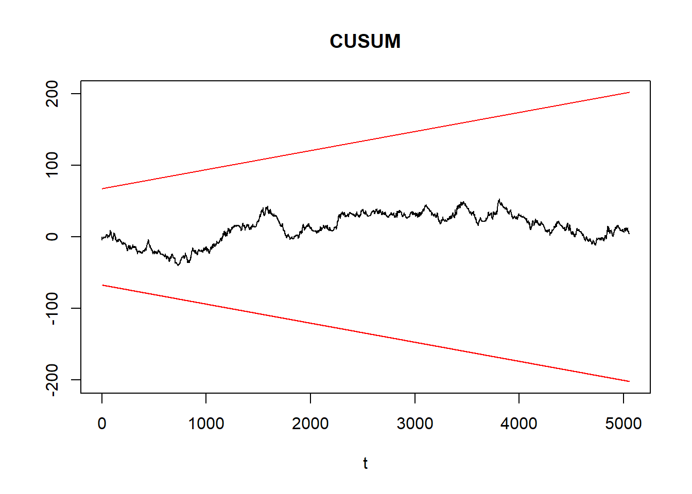
# Estadísticas CUSUMSQ
## Mide la estabilidad en la varianza del modelo
plot(cumq,type="l",xlab="t",ylab="",main="CUSUMSQ")
lines(LQS,type="S",col="red")
lines(LQI,type="S",col="red")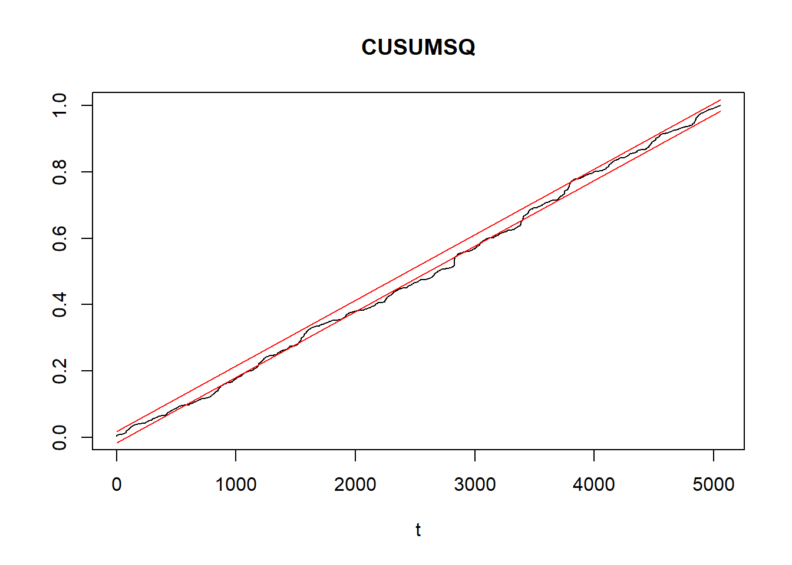
3.2.0.4.4 Rolling
Una vez verificados los supuestos, se procede a evaluar la capacidad predictiva del modelo mixto. Para ello utilizamos rolling.
# Rolling corregido
fcmat=matrix(0,nrow=ntest,ncol=h)
for(i in 1:ntest){
x=window(y,end=time(ly)[ntrain]+(i-1)/365.25)
refit=Arima(x,model=modelo.propuesto2)
fcmat[i,]=as.numeric(forecast::forecast(refit,h=h)$mean) # Pronósticos para datos estacionarios
}# Para volver a la escala original
estacionalidad<-as.vector(results_ciclo_ts)
tendencia<-as.vector(predict(fit_e))
fchstepahe<-(fcmat+estacionalidad[4296:5054])+tendencia[4296:5054] # primero sumamos la estacionalidad y luego la tendencia
errores_pred = verval-fchstepahe
ECM=apply(errores_pred^2,MARGIN = 2,mean,na.rm=TRUE)
RECM=sqrt(ECM)
RECM # 22840.1[1] 22840.13.2.0.5 Predicciones sobre datos de prueba
fchstepahe_ts<-ts(fchstepahe,start=time(ly)[ntrain]+1/365.25,frequency=365.25)
plot(verval_ts, col = "blue", ylab = "Energía", xlab = "Tiempo")
lines(fchstepahe_ts, col = "red")
legend("topright", legend = c("Reales", "Predicciones"), col = c("blue", "red"), lty = 1)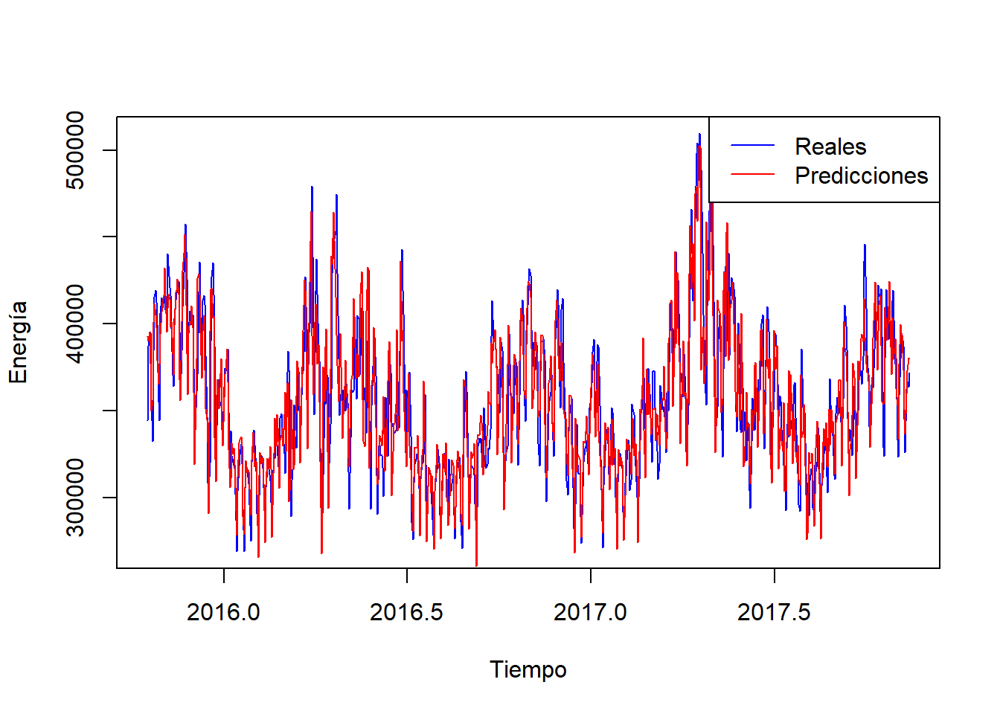
3.3 Proceso ARIMA
Para ajustar un modelo ARIMA (aunque no es lo más adecuado dado que la serie presenta componente estacional), primero se debe comprobar si la serie de tiempo presenta una raíz unitaria. Teniendo en cuenta que, para la prueba de Dicker Fuller, si el \(p-valor\) es menor que un nivel de significancia \(\alpha\) se rechaza la hipotesis nula de que la serie de tiempo presenta una raíz unitaria, se tiene lo siguiente.
stats::ar(energia2) # Selecciona un modelo AR usando el criterio de Akaike, sugiere tomar lags=36
Call:
stats::ar(x = energia2)
Coefficients:
1 2 3 4 5 6 7 8
1.0967 -0.4319 0.1631 -0.0202 0.0112 0.0217 0.1385 -0.1334
9 10 11 12 13 14 15 16
0.0302 0.0394 -0.0436 -0.0045 0.0394 0.1196 -0.1604 0.0593
17 18 19 20 21 22 23 24
0.0172 -0.0279 0.0320 -0.0221 0.1656 -0.1895 0.0736 -0.0536
25 26 27 28 29 30 31 32
0.0436 -0.0453 0.0435 0.1166 -0.1403 0.0378 -0.0228 -0.0066
33 34 35 36
-0.0332 0.0232 0.1493 -0.1453
Order selected 36 sigma^2 estimated as 329070266tseries::adf.test(energia2,k=36) # Prueba Dicker Fuller: No hay raíz unitariaWarning in tseries::adf.test(energia2, k = 36): p-value smaller than printed
p-value
Augmented Dickey-Fuller Test
data: energia2
Dickey-Fuller = -8.1586, Lag order = 36, p-value = 0.01
alternative hypothesis: stationarysummary(ur.df(energia2,type="trend",lags = 36))
###############################################
# Augmented Dickey-Fuller Test Unit Root Test #
###############################################
Test regression trend
Call:
lm(formula = z.diff ~ z.lag.1 + 1 + tt + z.diff.lag)
Residuals:
Min 1Q Median 3Q Max
-144842 -10683 -880 10058 98316
Coefficients:
Estimate Std. Error t value Pr(>|t|)
(Intercept) 2.648e+04 3.278e+03 8.079 8.14e-16 ***
z.lag.1 -6.722e-02 8.239e-03 -8.159 4.25e-16 ***
tt -5.746e-01 1.879e-01 -3.058 0.002240 **
z.diff.lag1 1.757e-01 1.554e-02 11.307 < 2e-16 ***
z.diff.lag2 -2.754e-01 1.569e-02 -17.549 < 2e-16 ***
z.diff.lag3 -9.995e-02 1.614e-02 -6.193 6.37e-10 ***
z.diff.lag4 -1.297e-01 1.614e-02 -8.032 1.18e-15 ***
z.diff.lag5 -1.096e-01 1.623e-02 -6.755 1.59e-11 ***
z.diff.lag6 -9.557e-02 1.628e-02 -5.869 4.66e-09 ***
z.diff.lag7 4.296e-02 1.633e-02 2.630 0.008558 **
z.diff.lag8 -8.916e-02 1.632e-02 -5.463 4.90e-08 ***
z.diff.lag9 -5.914e-02 1.633e-02 -3.621 0.000297 ***
z.diff.lag10 -1.984e-02 1.634e-02 -1.214 0.224918
z.diff.lag11 -6.555e-02 1.630e-02 -4.022 5.86e-05 ***
z.diff.lag12 -6.658e-02 1.631e-02 -4.081 4.55e-05 ***
z.diff.lag13 -2.957e-02 1.630e-02 -1.814 0.069749 .
z.diff.lag14 8.892e-02 1.630e-02 5.455 5.13e-08 ***
z.diff.lag15 -7.011e-02 1.628e-02 -4.306 1.69e-05 ***
z.diff.lag16 -1.172e-02 1.627e-02 -0.720 0.471424
z.diff.lag17 8.099e-03 1.623e-02 0.499 0.617737
z.diff.lag18 -2.567e-02 1.621e-02 -1.584 0.113336
z.diff.lag19 1.229e-02 1.616e-02 0.760 0.447063
z.diff.lag20 -1.552e-02 1.614e-02 -0.961 0.336397
z.diff.lag21 1.543e-01 1.610e-02 9.584 < 2e-16 ***
z.diff.lag22 -4.081e-02 1.614e-02 -2.529 0.011471 *
z.diff.lag23 3.898e-02 1.614e-02 2.415 0.015773 *
z.diff.lag24 -1.987e-02 1.609e-02 -1.235 0.217069
z.diff.lag25 2.709e-02 1.598e-02 1.695 0.090117 .
z.diff.lag26 -2.176e-02 1.588e-02 -1.371 0.170571
z.diff.lag27 2.413e-02 1.584e-02 1.524 0.127655
z.diff.lag28 1.405e-01 1.574e-02 8.923 < 2e-16 ***
z.diff.lag29 -5.265e-04 1.572e-02 -0.034 0.973277
z.diff.lag30 3.564e-02 1.571e-02 2.268 0.023358 *
z.diff.lag31 1.438e-02 1.555e-02 0.925 0.355066
z.diff.lag32 6.620e-03 1.535e-02 0.431 0.666276
z.diff.lag33 -2.859e-02 1.510e-02 -1.894 0.058303 .
z.diff.lag34 -4.864e-03 1.491e-02 -0.326 0.744260
z.diff.lag35 1.495e-01 1.411e-02 10.598 < 2e-16 ***
z.diff.lag36 -8.638e-03 1.415e-02 -0.610 0.541638
---
Signif. codes: 0 '***' 0.001 '**' 0.01 '*' 0.05 '.' 0.1 ' ' 1
Residual standard error: 17980 on 4978 degrees of freedom
Multiple R-squared: 0.5122, Adjusted R-squared: 0.5084
F-statistic: 137.5 on 38 and 4978 DF, p-value: < 2.2e-16
Value of test-statistic is: -8.1586 22.1938 33.2897
Critical values for test statistics:
1pct 5pct 10pct
tau3 -3.96 -3.41 -3.12
phi2 6.09 4.68 4.03
phi3 8.27 6.25 5.34Como se puede ver, en ambos casos las pruebas muestran que la serie no presenta raíces unitarias, por lo que ajustar este modelo no es adecuado.
3.4 Proceso SARIMA
Dado que la serie presenta multiple estacionalidad, no es posible ajustar un modelo de la familia SARIMA.